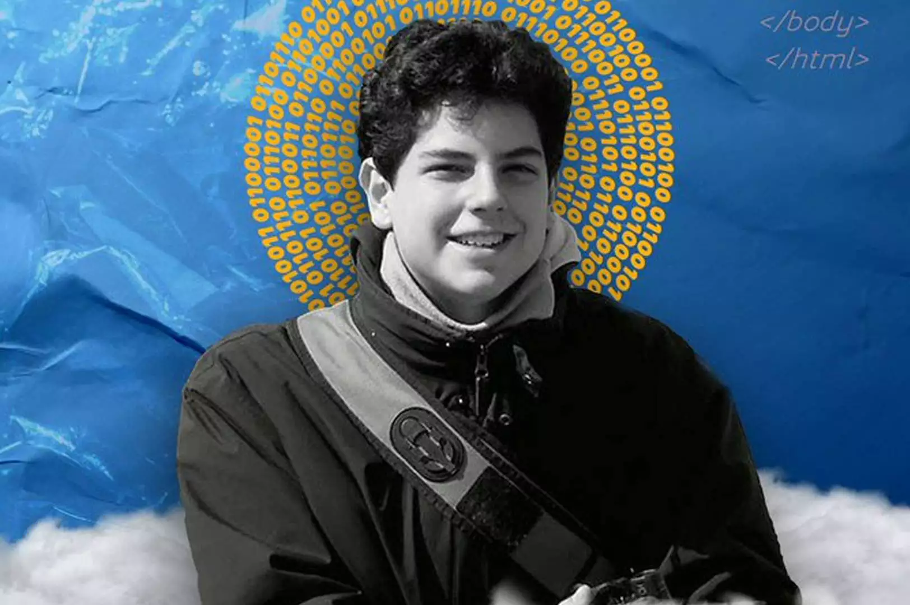

Destaques sobre Carlo Acutis

Fé Jovem
Carlo mostrou que a juventude também pode ser um caminho de dedicação a Deus, oração e amor ao próximo.
Tecnologia e Evangelização
Ele utilizou seus conhecimentos em informática para divulgar conteúdos religiosos e inspirar outras pessoas.

Participe do Fã-Clube
Entre em contato para compartilhar mensagens, homenagens e sua admiração por São Carlo Acutis.